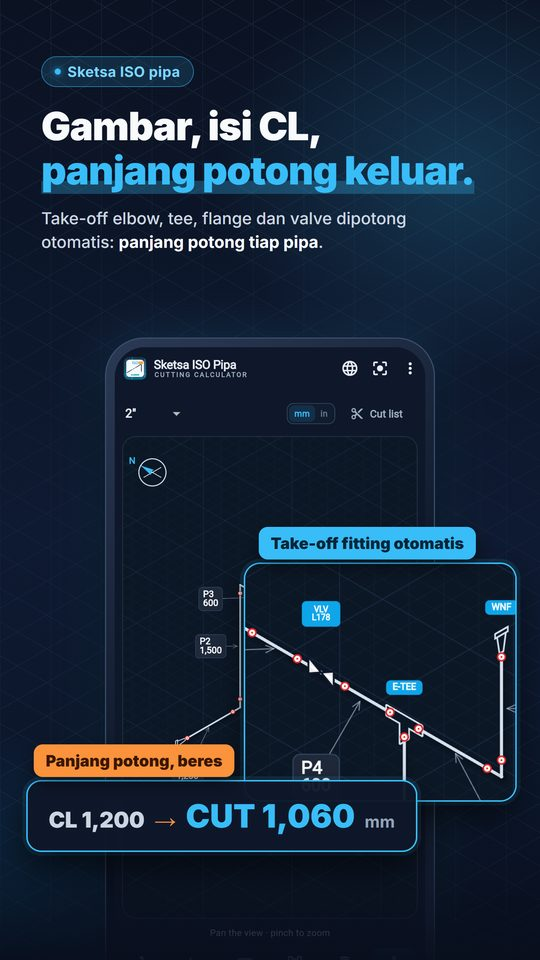

Untuk pipe fitter, fabrikasi dan supervisor piping
Gambar isometrik pipa,
dapatkan setiap panjang potong
Pipe ISO Calculator adalah aplikasi untuk pipe fitter di lapangan dan workshop: gambar jalur pada grid isometrik, masukkan ukuran center (CL), dan ukuran fitting dikurangi otomatis sehingga panjang potong (CUT) tiap pipa langsung keluar. Juga menghitung offset 45°, rolling offset, offset pipa paralel dan potongan elbow miter.

Isometrik, cut list dan kalkulator lapangan dalam satu aplikasi
Fitur utama
Panjang potong (CUT)
Masukkan ukuran CL dan dapatkan panjang potong dengan pengurangan fitting ASME B16.9 butt weld dan B16.11 socket weld/ulir, hingga 24".
Isometrik pipa
Gambar di grid ISO, tambahkan elbow, tee, reducer, flange, valve dan olet, lalu cek titik las dan cut list.
Offset dan miter
Offset 45°, rolling dan 90°+45°, offset 2–4 pipa paralel, dan potongan elbow miter.
Gratis dan Pro
Gratis
Elbow miter, offset 2D dan ekspor PDF/DXF masing-masing 5 kali per minggu. Menggambar, mengedit isometrik dan melihat tabel fitting tidak mengurangi kuota.
Pro
Menghapus batas mingguan. Pilihan paket dan harga lokal ditampilkan di Google Play. Tanpa iklan.
Kuota direset setiap Senin pukul 00:00 waktu setempat. PDF gratis tanpa watermark. Bahasa aplikasi: Bahasa Indonesia.
Kapan berguna
Menghitung pengurangan fitting secara manual di lapangan lambat dan rawan salah. Gambar jalurnya sekali, semua ukuran CL dan CUT tersimpan bersama.
Bagikan isometrik dan cut list sebagai PDF ke workshop, mandor atau klien, atau ekspor DXF untuk dibuka di CAD. Satuan mm atau feet-inch dengan pecahan 1/16".
Kata kunci: aplikasi isometrik pipa, kalkulator pipa, kalkulator pipe fitter, panjang potong pipa, offset pipa
Catatan
Aplikasi ini membantu pengecekan di lapangan. Sebelum fabrikasi dan pengelasan, selalu ikuti gambar yang disetujui, spesifikasi, standar, data pabrikan dan supervisor Anda.